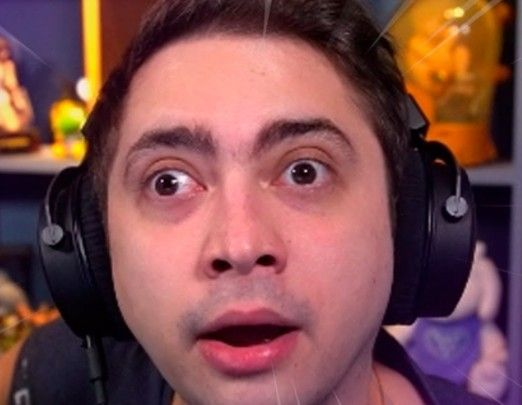

Carreira
Inicialmente, Alanzoka estabeleceu-se como um youtuber de Five Nights at Freddy's e Fortnite. Em 2016, integrou a seleção brasileira de Overwatch. Alanzoka também ficou conhecido jogando Rocket League e Valorant.
Reconhecimento
Alanzoka é frequentemente reconhecido como um dos streamers da Twitch mais conhecidos no e foi um dos mais assistidos ao transmitir Valorant e Cyberpunk 2077. Foi inserido na lista "Cinco streamers brasileiros pra você ficar de olho na Twitch" da The Clutch e na lista "Streamers para assistir durante isolamento pelo coronavírus" do Globo Esporte.
Prêmios e indicações
| Ano | Premiação | Categoria | Trabalho | Resultado |
|---|---|---|---|---|
| 2019 | eSports Awards | Streamer do Ano | Alanzoka | Indicado |
| Prêmio eSports Brasil | Melhor Streamer do Ano | Indicado | ||
| Personalidade do Ano | Indicado | |||
| 2020 | MTV Millenial Awards | Streamer Br | Venceu | |
| Prêmio iBest | Conteúdo de Games | Indicado | ||
| 2021 | Prêmio Cubo de Ouro | Streamer Geek do Ano | Indicado | |
| Prêmio Influenciadores Digitais | Games | Venceu | ||
| Prêmio iBest | Twitcher do Ano | Indicado | ||
| Prêmio Influency.me | Games | Indicado |